NUCLEO board *¶
- Auteur
J.Soranzo
- Date
Mars 2020
- Societe
VoRoBoTics
- Entity
VoLAB
Sommaire
Présentation¶
3 type de cartes 32, 64, 144 : fonction de la taille du boîtier du composant utiliés!
LQFP64 package, LQFP144 package
RCC acronym : Reset and Control Clcok
Carte NUCLEO-F401RE¶
Chip: STM32F401RE (R = 64pin package, E = 512k FLASH)
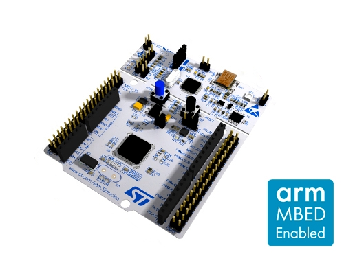 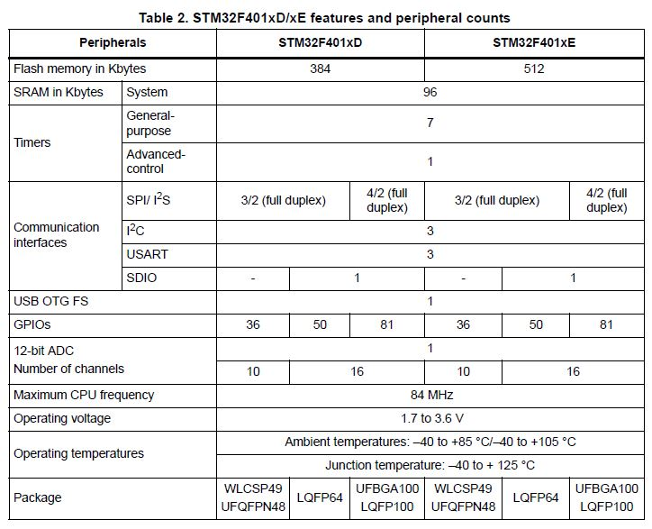{kind=link}
{kind=link}
Carte NUCLEO64
Prix indicatif : 13€ NUCLEO-F401RE chez MOUSER 5
Osc clock supply See in UM1724 STM32 Nucleo-64 boards (MB1136) §6.7
Ressources pour le dev Ok il y a CubeMX qui mâche bien le boulot.
Ok il y a les pdf, mais il n’y en a pas de spécifique à cette carte en particulier.
On a:
La doc du processeur : la datasheet ne contient pas les registres des périph (135 pages)
PM0214 : programming manuel 245 pages : mais bon sans plus, à relire un de ces prochains jours.
RM0368 : Reference manuel 835 pages
UM NUCLEO board 64 : UM1724 : forunit quelques précieuse informations parfois.
Mais on peut aussi s’aider de la doc dcoxygen généré (cf. Modules/STM32F4xx_HAL_Driver)
Mais quand tout ça ne suffit pas :
Exemple la fonction : HAL_GPIO_Init accepte un premier paramètre de type : GPIO_TypeDef qui n’est pas tellement documenté.
Tips: l’IDE fournit un moyen rapide d’accéder à sa déclaration et on apprend ainsi qu’elle se trouve dans le fichier:
/CMSIS/Device/ST/STM32F4xx/Include/stm32f401xe.h
Carte NUCLEO-F429ZI¶
Chip: STM32F429ZI (Z = 144pin package, I = 2048k FLASH)
32b Arm® Cortex®-M4 MCU+FPU, 225DMIPS, up to 2MB Flash/256+4KB RAM, USB OTG HS/FS, Ethernet, 17 TIMs, 3 ADCs, 20 com. interfaces, camera & LCD-TFT
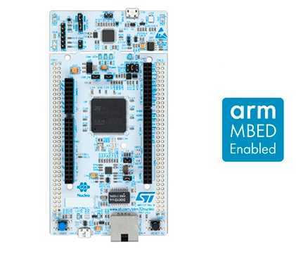{kind=link}

Carte NUCLE144
Prix indicatif : 26€ NUCLEO-F429ZI chez MOUSER 4
NUCLEO-F746ZG¶
(Z = 144pin package, G = 1024k FLASH)
Cortex M7 (architecture ARM V7)
High-performance and DSP with FPU ARM Cortex-M7 MCU with 1 Mbyte Flash, 216 MHz CPU, Art Accelerator L1 cache, 320k ( 64k of data TCM RAM for critical real-time data) + 16KB of instruction TCM RAM (for critical real-time routines) + 4KB of backup SRAM (available in the lowest power modes)
single precision FPU
Prix indicatif : 22€
Nécessite d’installer STM32CubeF7
Différences entre cartes¶
Quelle différence entre un F429-ZI et une NUCLEO-F746ZG ?
Je n’ai personnelement pas trouvé de source facile et fiable.
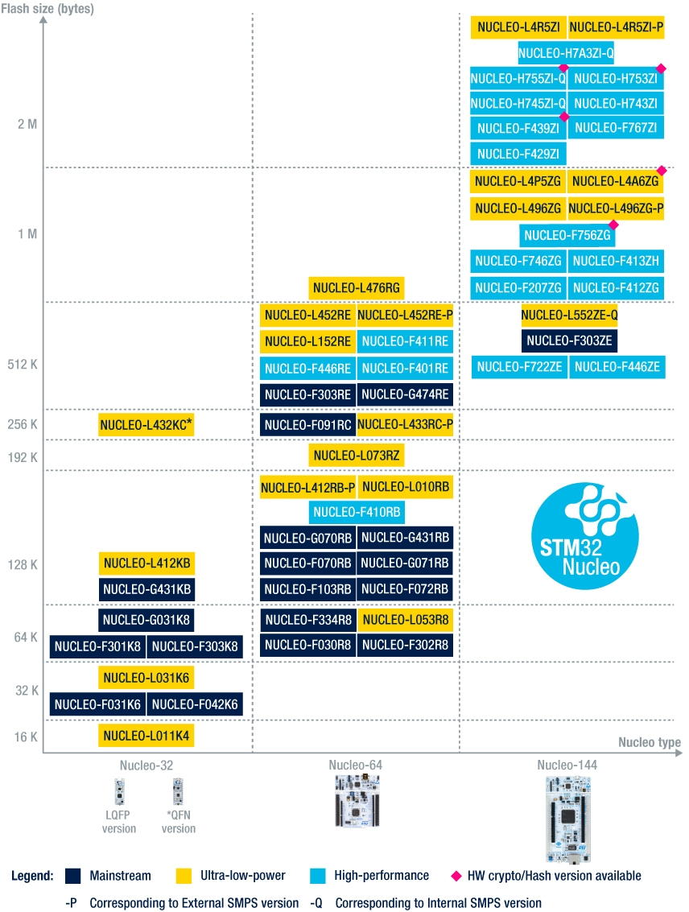{kind=link}
Source image : site st STM32 Nucleo Boards 1
Cortex M4F versus M7 ?
Un article sur community arm 6
Sans oublier Cortex M sur wikipedia 7
Outils de développement¶
STM32CubeMX est l’outil indispensable et IL FAUT COMMENCER par LUI voir UM1718_CubeMX.pdf J’utilise actuellement (04/2020) la version 5.6.0
STM32 workbench développé par ACSYSY ou AC6. Dans la litérature ST cette suite logiciel se nome SW4STM32. Il en est question sur la page officiielle SW4STM32 8 qui renvoie vers la page openstm32 9
Cet outil est basé sur Eclipse. Je ne suis pas fan. Je trouve que tout cela est très lourd ! Mais comme ces petits microcontroleurs ont l’air plein de potentiel, je fais l’effort…
System Worbench for STM32 : vers qui faut-il se trouner pour avoir de l’aide ?
Eclipse, Acsys ou ST ? ou peut-ête vers le site openstm32.org 9 (ce qui reviens à peut près au même que AC6)
Exemple la commande Format du menu Source ! On fini par la trouver dans l’aide de Eclipse:
C/C++ Development User Guide/Reference/C/C++ Menubar/Source Menu
Autres outils de développement¶
Officiellement sur le site ST outils de dev 11, il y a :
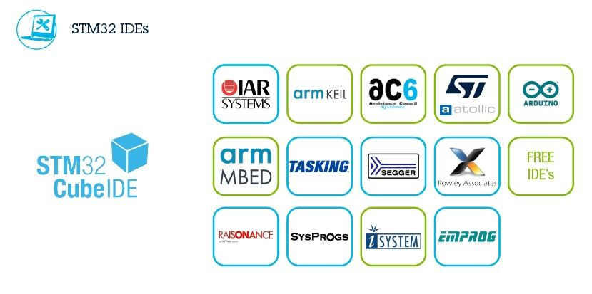{kind=link}
La page product selector annonce 32 items au 10/04/2020, la plupart sont payant comme IAR, KEIL
Atolic TrueStudio => remplacé par STM32cubeIDE 10
Au niveau des fonctionnalité cela ressemble à STM32workbench si ce n’est que ST annonce une forte intégration avec STM32cubeMX.
KEIL uVision
Qt possible également : il faudra que j’explore cela !
Les pdf étudiés¶
Il y en a des tas !!! Il y a même des fichiers .chm dans les packages. Exemples:
STM32Cube_FW_F4_V1.25.0\Drivers\BSP\STM32F4xx-Nucleo
STM32Cube_FW_F4_V1.25.0\Drivers\STM32F4xx_HAL_Driver et là pas de bol il n'y a rien pour
NUCLEO-F401 snif
gettingStarted_firmware_en.DM00105925.pdf¶
Getting started with the STM32 Nucleo board firmware package UM1726
16 pages DocID025839 Rev 2 de avil 2014
This document describes the software, firmware environment and development recommendations required to build an application around the STM32 Nucleo board (NUCLEO-F103RB, NUCLEO-L152RE, NUCLEO-F030R8 and NUCLEO-F302R8) with some demonstration firmware (STSW-STM32143).
Remarque : SSTSW-STM32143 : TM32 Nucleo examples, based on Standard Peripheral Library (UM1726)
Ce document parle du firmware package:
The STM32 Nucleo board firmware drivers and examples are based on the Standard
Peripheral library, and are provided in one single package supplied in a zip file. The
extraction of the zip file generates one folder, STM32_Nucleo_FW_VX.Y.Z
- Et pas en.stm32cubef4_v1-25-0.zip ? Je n’ai pas trouvé d’autre zip sur le site ! Ce genre de petites
incohérences rendent les choses encore plus compliquées qu’elles ne sont.
J’ai décompacté la version cube que j’ai du zip dans dossier 1 et l’arborescence ne correspond pas complètement à ce qui est décrit dans le document ! Or, on trouve dans l’arbo en question un document d’explication plus récent que celui-ci : UM1730 de février 2019
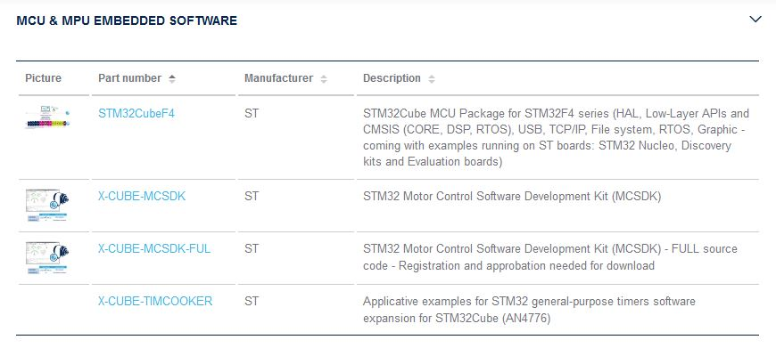{kind=link}
Adresse de cette copie d’écran : page nucleo-F401RE Tools and Softwares 12
J’abandonne donc l’étude du présent document pour me consacré à ce document plus récent.
STM32CubeF4GettingStarted.pdf¶
Getting started with STM32CubeF4 MCU Package for STM32F4 Series UM1730 février 2019 28 pages
manip du 22/03/2020 : tentative d’ouvir l’exemple GPIO toggle
Workspace:
...\STM32Cube_FW_F4_V1.25.0\Projects\STM32F401RE-Nucleo
Quand on change d’espace de travail, l’application redémarre entièrement et est très longue à redémarrer !
- Quand on importe le projet, il se nomme STM32F4xx-Nucleo et pas GPIO ! et tous les exemples risquent
de se nommer ainsi. Il y a un post sur le forum : Rename projects ..Does that work ? 13
Essai 1 : import avec copy to workspace: 6 warning invalid projet path (des chemin relatifs):
Description Resource Path Location Type
Invalid project path: Include path not found (C:\MountWD\00-Outils\06-ConceptionDeveloppement\ST\STM32Cube_FW_F4_V1.25.0\Projects\Inc). STM32F4xx-Nucleo pathentry Path Entry Problem
Invalid project path: Include path not found (C:\MountWD\00-Outils\06-ConceptionDeveloppement\ST\STM32Cube_FW_F4_V1.25.0\Projects\STM32F401RE-Nucleo\STM32F4xx-Nucleo\Debug). STM32F4xx-Nucleo pathentry Path Entry Problem
Invalid project path: Include path not found (C:\MountWD\Drivers\BSP\STM32F4xx-Nucleo). STM32F4xx-Nucleo pathentry Path Entry Problem
Invalid project path: Include path not found (C:\MountWD\Drivers\CMSIS\Device\ST\STM32F4xx\Include). STM32F4xx-Nucleo pathentry Path Entry Problem
Invalid project path: Include path not found (C:\MountWD\Drivers\CMSIS\Include). STM32F4xx-Nucleo pathentry Path Entry Problem
Invalid project path: Include path not found (C:\MountWD\Drivers\STM32F4xx_HAL_Driver\Inc). STM32F4xx-Nucleo pathentry Path Entry Problem
Evidement cela ne compile pas : no rule to make.
Essai 2 : sans copy : toujours un warning et toujours pas de possibilité de build sans créer une nouevelle target comme pour l’essai 1. Je n’ai même pas essayé de compiler
Essai 3 : le workspace directement au niveau de l’exemple et au plus près:
...\STM32F401RE-Nucleo\Examples\GPIO\GPIO_IOToggle\SW4STM32
Cette configuration fonctionne au moins.
Dans le document, on apprend que le package contient:
STM32Cube HAL STM32 abstraction layer embedded software maximizing portability across the STM32 portfolio
low-layer APIs (LL) for a set of peripherals, offering a fast, lightweight, expert-oriented layer that is closer to the hardware than the HAL
a consistent set of middleware components, such as RTOS, USB, TCP/IP and graphics
all embedded software utilities, with a full set of examples
Pour information : BSP Board Support Package
Au chapitre 3, §3.1, il est écrit: « The user only has to define the right macro in stm32f4xx.h » Or dans les exemples fournis, on ne trouve ni trace de cette macro ni même de ce fichier ! La confusion, la confusion… Je ne l’ai trouvé dans les fichiers : CMSIS
Etude du §4.2 How to develop an application
4.2.1 HAL app. Une note très importante
Avertissement
If an existing project is copied into another location, the include path must be updated.
Sauf qu’on ne nous dit pas comment !
En résumé:
1. Create a project
2. Add the necessary middleware to the project (optional)
3. Configure the firmware components
4. Start the HAL Library
5. Configure the system clock
6. Peripheral initialization
7. Develop an application process
Avec l’expérience, je dirais qu’en ce qui concerne STM32Workbench, il est nettement préférable de laisser faire le wizard. Et même là c’est gagné! Voit STM32Workbench minimum project
UM1718_CubeMX.pdf¶
STM32CubeMX for STM32 configuration and initialization C code generation
UM1718 User manual 363 pages rev 31 12/2019.
C’est la doc de CubeMX : a graphical software configuration tool that allows to generate C initialization C code using graphical wizards.
En revenche, il y est question de HAL driver user manuals for STM32F4xx (UM1725)
Il semble que cela soit un outil indispensable pour démarrer un nouveau projet.
Vidéo Youtube pour Stm32CubeMX 14
Avertissement
Voir le menu help/doc and ressources (il y a encore plein de pdf..)
Initilize all periperals in their default mode ? Mais quel est-il, je n’ai encore rien pu trouvé à ce sujet. En fait, page 62/363, on trouve:
Selecting a board and accepting to initialize all peripherals to their default mode
automatically sets both the pinout and the default modes for the peripherals available
on the board. This means that STM32CubeMX generates the C initialization code for all the
peripherals available on the board and not only for those relevant to the user application
J’en déduit qu’il vaut mieux répondre non. Mais cubeMX configure quand même tout ce qui est horloge et reset.
L’HELP de cubeMX renvoi vers le présent document.
getting-started-with-stm32-nucleo-board-software-development-tools-stmicroelectronics.pdf¶
dm00105928- UM1727 22 pages de Janvier 2016
Getting started with STM32 Nucleo board softwaredevelopment tools, UM1730 semble plus à jour.
Petite description des différentes chaînes de dev
N’apporte rien !
UM1725 Description of STM32F4 HAL and LL drivers DM00105879¶
1838 pages Fev 2017
C’est assurément un document MAJEUR dans l’utilisation des STM32.
L’étude de ce document va de paire avec l’étude du répertoire en question:
...\STM32Cube_FW_F4_V1.25.0\Drivers\STM32F4xx_HAL_Driver
Il est à noter que tout le code contient des commentaire compatible avec Doxygen donc on peut en faire l’extraction mais cela peut-ête long.
Les drivers HAL, en fait les fonctions pour accéder aux composants du microcontroleur sont découpés en modules fonctionnels. Ils offrent non seulement une indépendance du code vis-à-vis du micro mais présentent en plus un certains nombre de caractérisitiques particulièrement intéressantes:
3 modèles de programmation: polling, interrupt and DMA.
APIs sont compatible RTOS
Mécanisme de verouillage d’objet
multiple instance call
callback fonctions…
Les fichiers .c/.h sont fournis par périphériques développés en ANSI-C strict pour un maximum de compatibilité et entièrement documenté et MISRA-C 2004 15 compliant. La liste est longue, j’en ai dénombré 68:
_adc, _adc_ex, _can, _cec, _cortex, _crc, _cryp, _cryp_ex, _dac, _dac_ex, _dcmi, _dcmi_ex, _def,
_dfsdm, _dma, _dma2d, _dma_ex, _dsi, _eth, _exti, _flash, _flash_ex, _flash_ramfunc, _fmpi2c,
_fmpi2c_ex, _fmpsmbus, _gpio, _gpio_ex, _hash, _hash_ex, _hcd, _i2c, _i2c_ex, _i2s, _i2s_ex,
_irda, _iwdg, _lptim, _ltdc, _ltdc_ex, _mmc, _nand, _nor, _pccard, _pcd, _pcd_ex, _pwr, _pwr_ex,
_qspi, _rcc, _rcc_ex, _rng, _rtc, _rtc_ex, _sai, _sai_ex, _sd, _sdram, _smartcard, _smbus, _spdifrx,
_spi, _sram, _tim, _tim_ex, _uart, _usart, _wwdg,
Exemple : stm32f4xx_hal_can.h
Chaque périphérique peut contenir 3 structures de données:
Peripheral handle structures
Initialization and configuration structures
Specific process structures
Peripheral handle structures Une strucutre qui détient les carac. du périph. Exemple : USART_HandleTypeDef
Son nom est de la forme nomPariph_HandleTypeDef (et comme sont nom l’évoque c’est un typedef)
Il y a des exeptions à la règle de périph qui n’en on pas : (périphériques partagés et système) GPIO, SYSTICK, NVIC, PWR, RCC, FLASH.
Initialization and configuration structure Nom de la forme periphName_InitTypeDef comme dans l’exemple GPIO_toggle : GPIO_InitTypeDef
Specific process structures Pas à proprement parlé des structure au sens C mais l’ensemble des fonctions.
Exemple : HAL_GPIO_Init(GPIOA, &GPIO_InitStruct);
Le nom est de la forme : HAL_nomPeriph_fonctionnalit( paramètres…)
L’API HAL est divisée en 3 catégories en fonction de la spécificité du driver.
généric
propre à une famille de composants
propre à un composant en particulier.
Tous les composants n’embarque pas toutes les fonctionalités. En page 44, se trouve un tableau de correspondance entre composants et API. Ce tableau s’atend sur 4 page au format paysage et couvre 17 composants :
|
|
|
|
Total 86 fichiers .c répartis en : 1 NA, 64 fichiers C HAL + 21 fichiers LL driver. Sur ce total, il en reste 34 HAL supportés par le F401xE:
|
|
|
Et 15 ll:
|
|
|
A signalé que les « driver » des catégories propre à une famille ou un composant on un suffixe _ex au nom de fichier et ne peuvent donc pas être différenciées ainsi. Le §2.5 rappelle ces règles ne nommage.
Il y a des macro qui commence par __HAL pour autoriser les interruption par exemple. Voir §2.5.2
callback fonctions
Elles sont de 3 types : initialisation/déinitialisation, process cb et error handling cb.
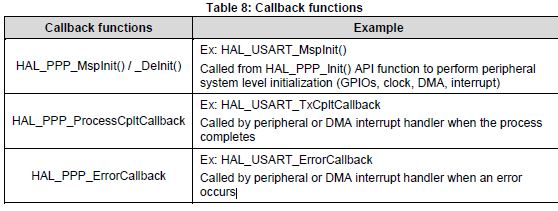{kind=link}
HAL generic APIs
De manière générale et non-exhaustive, l’API HAL définie un certain nombre de fonctions communes:
Initialization and de-initialization functions:HAL_PPP_Init(), HAL_PPP_DeInit()
IO operation functions: HAL_PPP_Read(), HAL_PPP_Write(),HAL_PPP_Transmit(), HAL_PPP_Receive()
Control functions:HAL_PPP_Set (), HAL_PPP_Get ().
State and Errors functions: HAL_PPP_GetState (), HAL_PPP_GetError ().
Il ne s’agit ici que d’un set général de focntions et selon le pariphérique considéré, d’autres fonctions existe comme start stop pour lancer les conversion d’un ADC…
HAL extension model cases
Il y a 5 manières utilisées pour définir des fonctions spécifiques (des extensions marquées par le suffixe _ex). Ces 5 manières sont décrite au §2.7.2. En fonction qu’il s’agisse de nouvelles fonctionnalités, ou de fonction surchargées pour une famille ou un composant en particuler.
File inclusion model Le seul fichier à include est stm32f4xx_hal.h, il référence tous les autres en cascade. Néamoins, il semblerait qu’il faille autoriser l’utilisation des ressources dans le fichier stm32f4xx_hal_conf.h. Example:
#define USE_HAL_USART_MODULE
- Mais le §2.10, nous apprend que cette modification n’est pas mandatory ! Alors pourquoi nous embêter
avec ça ?!
La suite du chapitre 2 décrit: HAL system peripheral handling (Clock, GPIO, SYSTIC, NVIC, EXTI, PWR, DMA), How to use HAL drivers (init, IO process, timeout and error managment).
Pour le moment je fais l’impasse sur les LL driver du chapitre 3 puis le chapitre 4 sur la cohabitation HAL et LL vient ensuite la description de chaque API HAL puis LL (DMA, ADC, UART, CAN I2C…)
Example §34 HAL I2C Generic Driver Commence par la description de I2C_InitTypeDef, puis I2C_HandleTypeDef
Puis tout est décrit: How to use this driver, Initialization and de-initialization functions, IO operation functions Peripheral State, Mode and Error functions, Detailed description of functions, Firmware driver defines.
Le recours à la table des matières et à l’étude le moment venu du besoiin est plus qu’à conseiller. C’est vraiment la bible.
Un aspect très intéressant dans la description est le point de vue des fonctions bloquantes et non bloquante est systématiquement étudiées.
Place à l’utilisation maintenant !
Mes manips de 2015¶
Décembre 2015, journal de manip en version OpenOffice, aidé du livre de Carmine Noviello 16
Dans son livre Carmine porpose d’installer un chaine de développement basée sur Eclipse et GCC et s’en explique…
Installation des outils:
Install dans c:\STM32Toolchaine comme décrit dans le livre pour ne pas être emmerdé
dans un premier temps.
Dézippe versin 64bits => une ereur à propos des plug in
dl java mais passage de la page it à fr.
Premier lancement d'Eclipse => error java
installjava => toujours la même erreur.
Recommencer avec version 32 bits, ça marche.
Install ECLIPSE + Plugin : OK
Install GCC-arm avec le conseil sur le PATH suivi.
Install Build Tools :
Dl version 32 bits
Installation sans problème
openocd : pas d'install, juste un unzip et un rennommage
ST Tools
STM32CubeMX => ok
ST-LINK Utility => ok
Install Nucleo drivers: dl sous forme de zip, renommage du fichier en NucleoDriver.zip
Upgrade ST-LINK firmware OK
Temps pour installer tout ça 3 heures
Next stage hello word
à suivre...
Manip micro Python cf journal au 25/12/2015 (à récupérer pour mettre ici)
Et STM32duino 17 ?
Mes manips 2020¶
Après bien des déboires avec SW4STM32 d’AC6, j’ai découvert STM32CubeMX et la oh! miracle ça devient si limpide !
Du coup dans mon espace de travail, j’ai:
toggleLeDCubeMX¶
un message RS sur UART2 toutes les 1s dans une boucle while
la LED sur PA5 qui clignote à 200ms grâce au TIM2 sous interruption.
Le plus gros du boulot est dans CubeMX mais l’interface de CubeMX est tellement simple que cela ne présente pas de grosses difficultés.
pushButtonInterrup¶
Objectif: utiliser le bouton poussoir de la carte sous interruption.
On commence dans CubeMX, mais avant une petite recherche Youtube. On ne trouve que pour Keil mais la partie CubeMX doit être la même. Mots clés: cubeMx AC6 push button
Vidéo Youtube de MYaqoobEmbedded 18
Vidéo Youtube de KGP Talkie 19
Problème de débounce. Solution HAL_getTick() if (prev-new > 25) toggle.
Ne pas oublier de remettre à 0 prev et new
HAL_getTick retourne un uint32_t soit 4 294 967 296ms ou encore 1193.05 heures 49jours17heures.
On pourrait avec getTick interdire l’it push button pendant 25ms par exemple.
Ma solution:
void EXTI15_10_IRQHandler(void) { /* USER CODE BEGIN EXTI15_10_IRQn 0 */ // if (HAL_GPIO_ReadPin(GPIOC, GPIO_PIN_13) == GPIO_PIN_SET // && btnIntDelay == 0 ){ if (btnIntDelay == 0 ){ btnIntDelay = HAL_GetTick(); HAL_GPIO_TogglePin(GPIOA, GPIO_PIN_5); } /* USER CODE END EXTI15_10_IRQn 0 */ HAL_GPIO_EXTI_IRQHandler(GPIO_PIN_13); /* USER CODE BEGIN EXTI15_10_IRQn 1 */ ....
La version du if qui test l’état de la pin 13 n’est pas une bonne idée car l’état peut être 0 en cas de rebond justement
Et dans le main:
while (1){ if ( btnIntDelay != 0 ){ if (HAL_GetTick() - btnIntDelay >= 25){ btnIntDelay = 0; } }Mieux, au lieu d’intervenir dans la fonction EXTI15_10_IRQHandler, utiliser
HAL_GPIO_EXTI_Callback(uint16_t GPIO_Pin):void HAL_GPIO_EXTI_Callback(uint16_t GPIO_Pin){ if (btnIntDelay == 0 && GPIO_Pin == GPIO_PIN_13){ btnIntDelay = HAL_GetTick(); HAL_GPIO_TogglePin(GPIOA, GPIO_PIN_5); } }
uartAndRXIt¶
Commençons dans la doc de l’API puis par une recherche internet pour une fois afin de voir si la doc est suffisante. Ne pas oublier les exemples fournis dans STM32Cube_FW_F4_V1.25.0 !
Configuration de CubeMX pour utiliser un UART avec interruption ? Relativement facile 1 cass à cocher sous l’onglet NVIC dans l’interface de configuration UART (j’ai choisi UART2)
Fonction à utiliser : HAL_UART_Receive_IT
Une vidéo plutôt bien faite sur Youtube from Web learning 20
Sans rien faire d’autre que d’ajouter __HAL_UART_ENABLE_IT(&huart2, UART_IT_RXNE);, j’ai bien
un branchement à void USART2_IRQHandler(void) mais seulement sur le premier caractère.
J’ai réussi à obtenir de bon résultats avec:
void USART2_IRQHandler(void)
{
/* USER CODE BEGIN USART2_IRQn 0 */
/* USER CODE END USART2_IRQn 0 */
HAL_UART_IRQHandler(&huart2);
/* USER CODE BEGIN USART2_IRQn 1 */
__HAL_UART_FLUSH_DRREGISTER(&huart2);
__HAL_UART_CLEAR_FLAG(&huart2, UART_IT_RXNE);
__HAL_UART_ENABLE_IT(&huart2, UART_IT_RXNE);
/* USER CODE END USART2_IRQn 1 */
}
Autre façon de procéder avec HAL_UART_Receive_IT(&huart2, &carac, 1); dans le main puis:
void HAL_UART_RxCpltCallback(UART_HandleTypeDef *huart){
//concaténation avec un buffer plus grand ici par exemple
//vérification si la transmission est complète
//flag tansmission terminée
//on peut aussi testé si c'est le bon uart avec
// if( huart->Instance == USART2){
//
// }
//Réactivation de la réception d'un caractère
HAL_UART_Receive_IT(&huart2, &carac, 1);
}
La fonction HAL_UART_Receive_IT est très bien si on connait la taille des message à transmettre.
Elle n’a pas de timeout. Mais comme elle n’est pas bloquante, on peut gérer les problèmes de non réponse ailleurs donc…
RX with DMA¶
Pas vraiment plus compliqué. Dans Cube MX, il faut aller dans l’onglet DMA de l’UART concerné et activer DMA RX
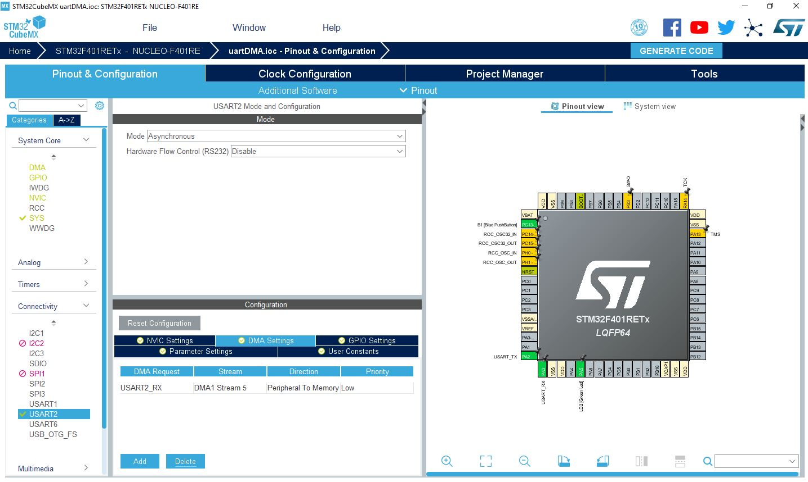{kind=link}
Et dans le code on utlise :
HAL_UART_Receive_DMA(&huart2, &c, 1); //dans le main et dans la fonction suivante
//pour lancer la réception c: uint8_t
//recevoir un caractère à la fois n'est pas très efficient !
//et
void HAL_UART_RxCpltCallback (UART_HandleTypeDef *huart)
Pour être plus efficient, iol y a la technique suivante
RX through idle line interrupt¶
Intéressant :IDLE line interrupt
Référence:
Idle line received est une des 10 sources d’interruption de l’UART (cf. RM0368 rev5 page 507)
Des exemples:
https://programming.vip/docs/stm32-hal-library-learning-serial-idle-interrupt.html
https://www.youtube.com/watch?v=tWryJb2L0cU
Attention, cette iterruption n’appelle pas la fonction HAL_UART_RxCpltCallback. Donc la bonne méthode est celle décrite dans l’article de mrkumar.
On modifie USARTi_IRQHandler dans le fichier stm32f4xx_it.c pour appeler notre propre fonction callback. Sauf que mrkumar crée d’abord un fonction USER_UART_IRQHandler qui appelle sa fonction callback USAR_UART_IDLECallback().
A l’intérieur de ces fonctions, on utilise huart.Instance == USART2 afin de déterminer si on
traite bien le bon UART (pour être tout à fait générique).
J’ai obtenu de bon résultats avec le code suivant dans le fichier stm32f4xx_it.c:
void USART2_IRQHandler(void)
{
/* USER CODE BEGIN USART2_IRQn 0 */
/* USER CODE END USART2_IRQn 0 */
HAL_UART_IRQHandler(&huart2);
/* USER CODE BEGIN USART2_IRQn 1 */
USER_UART_rxIddleCallback( &huart2 );
/* USER CODE END USART2_IRQn 1 */
}
puis en ajoutant à la fin du main.c
void USER_UART_rxIddleCallback( UART_HandleTypeDef *huart ){
__NOP();
HAL_UART_DMAStop( &huart2 );
uint8_t data_length = RX_BUF_SIZE - __HAL_DMA_GET_COUNTER(&hdma_usart2_rx);
memset(receive_buff,0,data_length);
data_length = 0;
HAL_UART_Receive_DMA(&huart2, (uint8_t *)receive_buff, RX_BUF_SIZE);
}
En n’oubliant pas d’ajouter dans la fonction main.c:
__HAL_UART_ENABLE_IT(&huart2, UART_IT_IDLE);
HAL_UART_Receive_DMA(&huart2, (uint8_t *)receive_buff, RX_BUF_SIZE);
STM32 I2C scanner¶
Cela peut s’avérer utile pour vérifier les branchements.
Directement trouvé sur le github de ProjectsByJRP 21
L’exemple est fournit pour un STM32F1xx mais l’adaptation est très simple ! J’ai procédé en faisant des copiés/collés plutot qu’en copiant directement le code. Tout se passe dans le main.c
Le principe est toujours le même, on essais une transaction simple pour toutes les adresses de composants entre 1 et 127 et si on reçoit un ack, on considère qu’il y a un composant.
Affichage avec des printf sur UART2
STM32 I2C OLED 0.96¶
Recherche internet : écran OLED 0.96 » IIC 22
Caractéristiques principales:
Resolution: 128x64
Driver chip: SSD1306
Wide voltage support: DC 3.3V-5V
Une librairie sur controllerstech.com 23
I2C1 : PB7 = SDA1 et PB6 = SCL1 (à noter que dans CubeMX I2C2 n’est pas utilisable car PB3 est utilisé par SYS_JTDO-SWO) mais il reste I2C3 !!! Mais on peut aussi les avoir sur PB8 = SCL et PB9 = SDA (plus simple pour le cablage). pour correspondre au pinout ARDUINO de la carte NUCLEO
Vidéo exemple:
Commande I2C HAL:
HAL_StatusTypeDef HAL_I2C_Master_Transmit(I2C_HandleTypeDef * hi2c, uint16_t DevAddress, uint8_t * pData, uint16_t Size, uint32_t Timeout)
Convertion d’image bitmap vers C Voir le github de Jasper van Loenen 27
STM32Workbench minimum project¶
Si on commence par utiliser STM32CubeMX, ce qui suit n’est pas utile !
SW4STM32
Note
File–>New–>Project…
In the « New Project » dialog box : select C/C++ –> C Project and click Next
In the « C Project » dialog : in project type select « AC6 STM32 MCU Project » under Toolchains Select « AC6 STM32 MCU GCC » and give a project name the click Next
In the « Select Configurations » dialog just click Next
In the « Target configurations » dialog select the right board (NUCLE-F401RE for me) and click Next and not Finish
In the « Project Firmware configuration » dialog: select Hardware Abstraction Layer and if you need them « Add low level driver in your project » and Finish
La dernière option est nécessaire si on veut une structure minimum pour commencer.
Il vaut mieux laisser le C/C++ indexer en bas à doite terminer sa tâche.
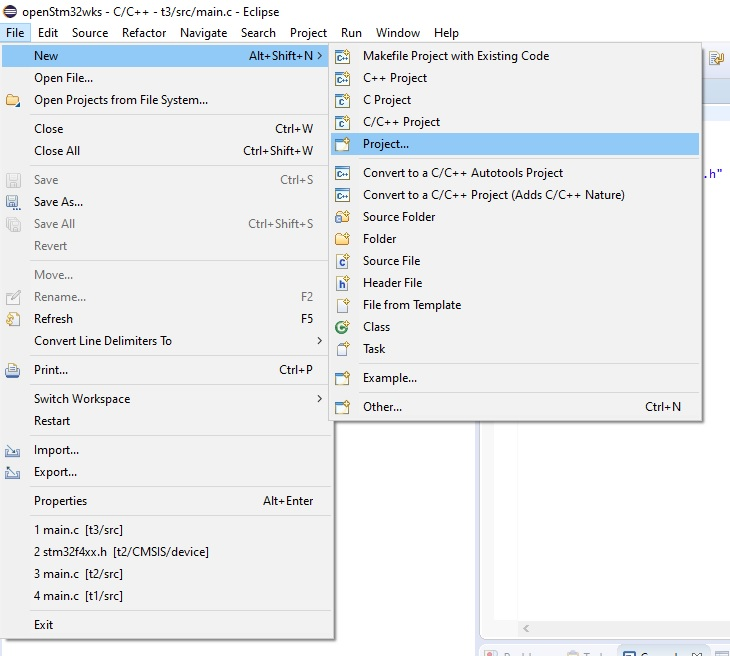 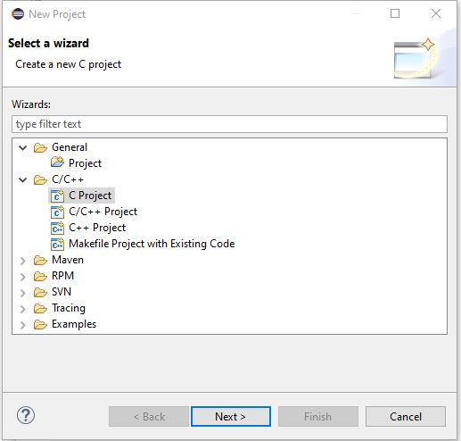 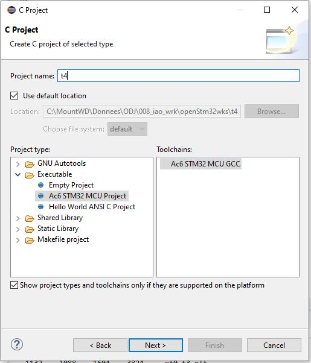 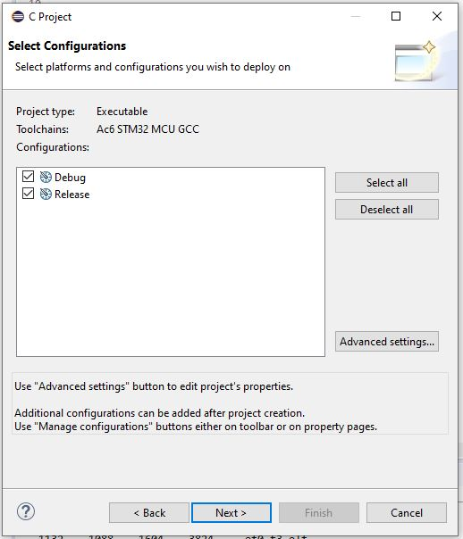 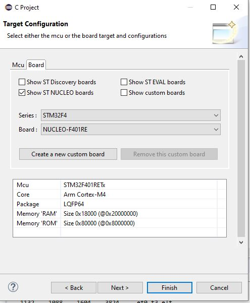 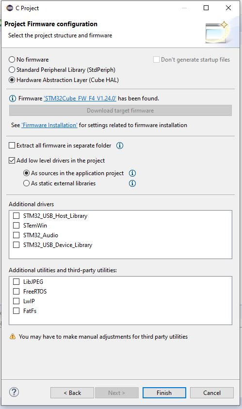{kind=link}
{kind=link}
{kind=link}
{kind=link}
{kind=link}
{kind=link}
Avertissement
Lorsque tout est terminé, faire un essai de compilation.
Ensuite si tout va bien, on peut commencer à coder. Comme décrit dans la documentation ( UM1730 §4.2), il faut commencer par initialiser HAL et l’horloge.
Donc dans la fonction main():
HAL_Init();
SystemClock_Config();
La première de ces 2 fonctions est définie dans le package dans le fichier stm32f4xx_hal.c
La deuxième doit être définie localement. Tous les exemples présent contiennent cette fonction donc copier/coller . Il faut prnedre avec la fonction static void Error_Handler(void) pour que cela compile.
Autres drivers et outils¶
Lors de la création d’un projet dans la dernière boîte de dialogue, Project Firmware configuration, il y a 2 zones particulière avec des cases à cocher: - Additionnal drives - Additionnal utilities and Third-party Utilities
On trouve la doc de ces modules dans leur répertoire respectifs sous Middleware.
STemWin
STM32_Audio
STM32_USB_Device_Library
STM32_USB_Host_Library
TouchGFX
CMSIS¶
Ce que c’est:
The CMSIS is a vendor-independent hardware abstraction layer for microcontrollers that are
based on Arm® Cortex® processors. The CMSIS defines generic tool interfaces and enables
consistent device support. It provides simple software interfaces to the processor and
the peripherals, simplifying software re-use, reducing the learning curve for microcontroller
developers, and reducing the time to market for new devices.
D’après ce que j’ai pu comprendre CMSIS est utilisé en grand partie par la/les librairies ST
FreeRTOS sur NUCLEO¶
Voir dans: FreeRTOS on STM32 NUCLEO
Tips¶
ctrl+space dans l’editeur de STM32Workbench pour le code complétion
Doxygen support¶
Visiblement c’est pas la préocupation principal. On peut activer le support de doxygen dans Preference/Editor Documentation Tolls Comment (liste déroulante)
Sur les forum on trouve une référence à /** suivit de return qui produirait automatiqument un bloc de commentaire pour une fonction. Je n’ai jamais réussi à le faire fonctionné.
- Je me suis créé des template qui commencent tous par doxy comme cela dans l’éditeur je tape doxy
suivit de ctrl+SPACE et j’ai ma liste de template.
NULCEO-F401 doesn’t start in stand alone mode¶
I have a board with ST-LINK v2.J23 firmware and board doesn’t start in stan alone mode (ie not connect to a computer) powered by a battery pack for example.
I triy a lots of internet search, a lots of test and nothing work.
I update de ST-LINK firmware to v2.J34 and it’s work.
How to : install STM32 ST Link utility and use ST-LINK/Firmware update.
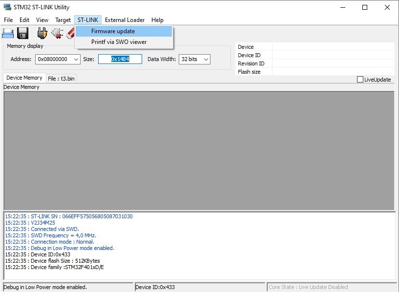{kind=link}
It open a STLink upgrade dialog
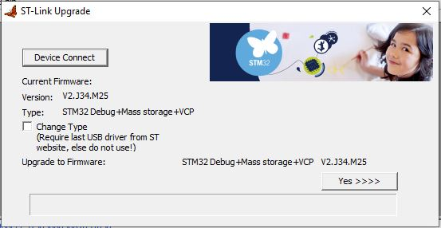{kind=link}
UART console in IDE¶
In System Workbench : voir sur EEBLOG 29
En résumé:
Créer une nouvelle connexion serial port : Windows/Show view/Others/connections…
Clic droit sur la nouvelle connexion : « Open Command Shell » ouvre la fenêtre dans la console
Créer une nouvelle console
la décaller
la pincée
Quand une console est « pincée », elle arrête de switchée automatiquement entre les différentes consoles possibles.
Weblinks¶
- 1(1,2)
https://www.st.com/en/evaluation-tools/stm32-nucleo-boards.html#overview
- 2
https://www.mouser.fr/new/stmicroelectronics/stm-stm32-nucleo-144-dev-boards/
- 3
- 4
- 5
- 6
https://community.arm.com/developer/ip-products/processors/f/cortex-m-forum/5686/m4-m7-comparision
- 7
- 8
- 9(1,2)
- 10
- 11
- 12
- 13
- 14
- 15
- 16
- 17
- 18
- 19
- 20
- 21
- 22
- 23
http://controllerstech.com/wp-content/uploads/2019/06/oled.zip
- 24
- 25
- 26
- 27
- 28
https://arm-software.github.io/CMSIS_5/General/html/index.html
- 29
http://eeblog.co.uk/2018/11/28/serial-terminal-window-in-system-workbench/
- 30